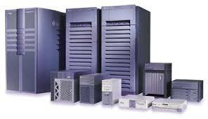
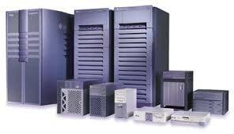

Soluções eficientes com a assessoria em Informática
Com as novas tecnologias disponíveis diariamente, a TI (Tecnologia da Informação) teve um
crescimento de importância muito grande em relação ao seu papel em pequenas, médias e grandes
companhias.
Em pleno funcionamento, a tecnologia da informação tem papel importante na produtividade dos
funcionários, e o retorno disso é uma eficiência de gestão e mais lucro. Por isso, tão importante
quanto a TI é a assessoria em informatica, para dar suporte a esse funcionamento.
Contar com os serviços de uma assessoria em informatica é evitar dor de cabeça com o gerenciamento
de um setor tão importante e delicado. Com o serviço de uma empresa especializada, o sistema
informatizado fica mais fácil e seguro, já que um profissional especializado em TI fica disponível
para corrigir problemas e sugerir soluções práticas para o dia a dia da empresa. Ou seja, ter esse
suporte significa mais segurança no desenvolvimento tecnológico dos funcionários, sem contratempos
que atrapalhem o fluxo de trabalho.
Serviços dee responsabilidade da assessoria em informática
Ao ter contato mais aprofundado a respeito das características e vantagens da assessoria em
informatica, os clientes obtêm uma visão ampla dos melhores serviços para cada necessidade existente
na empresa. Uma primeira vantagem são as dicas e soluções proporcionadas pelos profissionais de TI.
Ao contratar os serviços de uma assessoria em informatica, o cliente vai ter:
- Custo-benefício vantajoso, além de evitar possíveis falhas com soluções amadoras;
- Garantia de produtividade dos funcionários;
- Resultados a curto e de longo prazos;
- Mais segurança nos processos referentes ao uso de ferramentas da equipe de TI;
- Toda a estrutura de informática preservada, por meio de ações de manutenção eficientes.
Assessoria em informática de qualidade
A Computer Soluções em TI Eireli é assessoria em informatica que, desde 2011, cria soluções e presta
serviços de alta qualidade para clientes dos mais diferentes ramos. Suas soluções incluem serviços
de instalação, locação e manutenção de equipamentos e rede de informática.
Com uma equipe profissional qualificada, a Computer Soluções realiza assessoria em informatica com
atendimento remoto em até 90% dos casos, a fim de agilizar a solução dos problemas, além de prestar
todo o suporte e consultoria para eventuais dúvidas.

 
